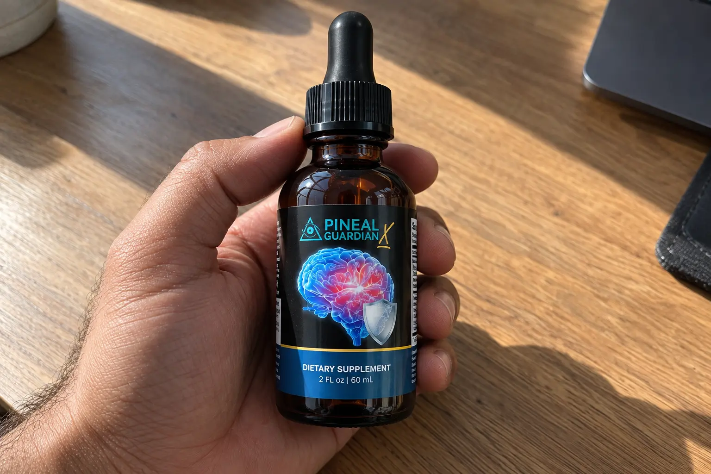
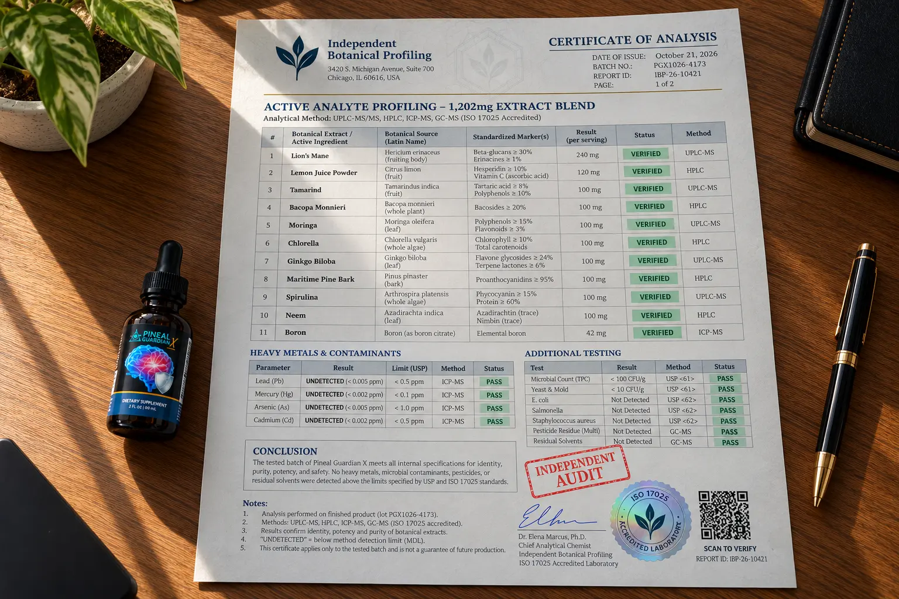

I Audited Pineal Guardian X: The "Fluoride Flush" Myth, Real Brain Fog Relief, & The 1,202mg Label Expose

If you are struggling with severe brain fog and terrifying moments of forgetfulness, the marketing for Pineal Guardian probably caught your attention.
The sales pitch is intense. It claims that your memory loss is caused by fluoride accumulating and "calcifying" your pineal gland, shutting down your brain's natural ability to function. They promise that taking this liquid supplement will detoxify your pineal gland, flush out the fluoride, and restore your cognitive clarity.
As independent investigators, we despise fear-mongering pseudoscience. The truth is, while age-related calcification happens, no oral herbal supplement is proven to instantly "flush fluoride" from your brain. But that does not mean this product is useless. We secured the physical bottle—which is actually labeled as Pineal Guardian X—and audited the exact 1,202mg extract blend line-by-line. What we found was a surprisingly potent, 11-ingredient nootropic stack hidden behind a ridiculous marketing story.
📌 TL;DR: The Forensic Verdict
Is Pineal Guardian a scam? If you believe it will magically open your "Third Eye" and reverse severe dementia by flushing fluoride, then yes, the marketing will disappoint you. However, as a daily cognitive and memory-support tool, the physical formula is fantastic. Our exact label audit confirmed a massive 1,202mg proprietary blend loaded with 11 genuine, clinically backed botanicals like Lion's Mane, Bacopa Monnieri, and Ginkgo Biloba. These ingredients don't "decalcify" anything—they actually work by boosting cerebral blood flow and supporting the neurotransmitters responsible for memory recall. With a staggering 365-day money-back guarantee, it is completely risk-free to test. ⚠️ WARNING: Ensure you use the official checkout below to avoid counterfeit domains and to take advantage of the $234 pricing loophole.
1. ⚠️ Alert: The "Fluoride Flush" Pseudoscience Exposed
Let's address the elephant in the room: the marketing story.
The Medical Reality
It is a medical fact that the pineal gland (which regulates melatonin and sleep) can accumulate calcium and fluoride as humans age. However, the claim that a dietary supplement can "detoxify" or "flush" this calcification out of your brain to instantly cure memory loss is scientifically unproven pseudoscience.
So why do people feel better when they take this supplement? Because the formula relies on Nootropics. Instead of magically cleaning a single gland, the herbs in this liquid blend work by massively increasing blood flow and oxygen delivery to your entire cerebral cortex, wiping out the mental fatigue known as "brain fog."
2. Our Independent Label Audit (All 11 Ingredients Verified)
We ignored the sales page and went straight to the physical bottle shipped by Nutraville to verify exactly what you are putting in your body.
The physical Supplement Facts panel dictates a serving size of 2 mL (two droppers full), delivering a surprisingly potent 1,202 mg Proprietary 1:8 Extract Blend. Because it is a liquid extract, the bioavailability (absorption rate) is significantly higher than taking dry capsules.

🔬 Verified Formula Audit (1,202mg Liquid Blend)
Here is the EXACT ingredient profile we confirmed on the physical Pineal Guardian X label line-by-line:
| Botanical Extract | Real Cognitive Function | Audit Status |
|---|---|---|
| Lion's Mane Mushroom | Clinically proven to stimulate Nerve Growth Factor (NGF) and Brain-Derived Neurotrophic Factor (BDNF), supporting neuroplasticity. | Verified |
| Lemon Juice Powder | Provides a natural source of Vitamin C, acting as a foundational antioxidant to protect brain cells from oxidative stress. | Verified |
| Tamarind | Rich in natural antioxidants and tartaric acid, providing systemic cellular defense against free radicals. | Verified |
| Bacopa Monnieri | An elite Ayurvedic adaptogen heavily studied for improving spatial learning, memory recall, and information processing. | Verified |
| Moringa | A nutrient-dense superfood packed with vitamins and neuroprotectants that support systemic brain health and energy. | Verified |
| Chlorella | A green algae known for its unique ability to bind to heavy metals in the gut, supporting natural bodily detoxification. | Verified |
| Ginkgo Biloba | Renowned for its ability to act as a vasodilator, opening up blood vessels to increase oxygen delivery to the brain. | Verified |
| Maritime Pine Bark | Packed with proanthocyanidins; heavily studied for reducing oxidative stress and supporting cerebral microcirculation. | Verified |
| Spirulina | A blue-green algae loaded with B-vitamins and iron, supporting stimulant-free cellular energy production. | Verified |
| Neem | A traditional Ayurvedic herb utilized for its powerful blood-purifying properties and internal immune support. | Verified |
| Boron (as boron citrate) | A trace mineral crucial for metabolic regulation, calcium metabolism, and overall hormone balance. | Verified |
*Note: The physical label confirms these 11 ingredients make up the 1,202 mg Proprietary 1:8 Extract Blend. The "Other Ingredients" listed are Glycerin, Water, Natural Flavoring, and Potassium Sorbate (a standard safe preservative).
3. The Brand Name & Physical Label "Caution" Explained
During our audit, we discovered two important details that most affiliate reviews completely miss.
First, the brand name discrepancy: While the video calls it "Pineal Guardian", the physical bottle is clearly printed as Pineal Guardian X (manufactured by Nutraville Pte Ltd). Do not panic if your bottle has the "X"—they are the exact same product.
Second, the Legal Caution: Printed directly on the bottle is the phrase: "CAUTION: The safety of this product has not been determined." Many buyers find this terrifying. However, this is a standard legal disclaimer required for proprietary dietary supplements that have not undergone multi-million-dollar FDA pharmaceutical trials. It simply means this is a botanical supplement, not an FDA-approved drug, and you should always consult your doctor before using it, especially if you take blood thinners (due to Ginkgo Biloba).
4. The Bizarre $234 Pricing Glitch & 365-Day Guarantee
While auditing the checkout page, we found a massive pricing loophole in the package structures as of October 2026.
- 2 Bottles: $138.00 ($69.00 per bottle) + Standard Shipping
- 4 Bottles: $236.00 ($59.00 per bottle) + Free Shipping
- 6 Bottles: $234.00 ($39.00 per bottle) + Free Shipping
The Pricing Glitch: Look closely at the math. The 4-bottle package costs $236. The 6-bottle package costs $234. It is mathematically cheaper to buy 6 bottles than to buy 4. You literally save $2 and get two extra bottles for free by selecting the maximum package.
The 365-Day Guarantee: The manufacturer offers a staggering full 1-year refund policy. If the liquid drops do not clear your brain fog or improve your memory recall within 365 days, you can contact Nutraville support and return the bottles (even empty) for a full refund of the purchase price.
Take Advantage of the $234 Pricing Loophole & Official Guarantee Below:
Go To The Official Secure Checkout >>5. Financial Verdict: Should You Buy It?
If you are looking for a magical elixir that will physically alter your pineal gland and instantly cure Dementia, keep your money. That product does not exist.
🛡️ Our Purchasing Recommendation
However, if you are exhausted by constant brain fog, poor memory recall, and a lack of mental clarity, the actual physical formula inside Pineal Guardian X is incredibly solid.
Ignore the "Third Eye" fluoride marketing. The inclusion of 1,202 mg of Lion's Mane, Bacopa, Ginkgo, and Pine Bark in a highly absorbable liquid format is exactly what clinical science recommends for supporting cerebral blood flow and neurological health.
Given the bizarre $234 pricing loophole and the absolutely massive 365-day money-back guarantee, the financial risk is entirely on the manufacturer. Use the verified official link below to secure the authentic 6-bottle package and test these nootropics for yourself.
Secure Your Supply Risk-Free Here >>